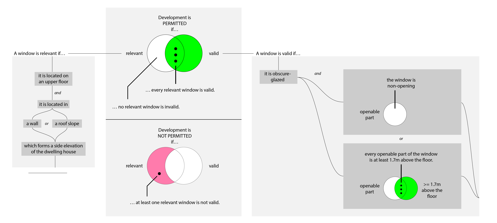

General Permitted Development Order (England) 2015
Table of Contents
- 1. Industry Context
- 2. Analysis
- 3. Normalization using Searle's Constitutive Rules
- 4. The Horn Clause
- 5. Formalization
- 6. Visualization
- 7. In L4
https://twitter.com/opensystemslab/status/1410976074822004736?s=21&t=xvk-IqaB4JXjfhEwxjoXvQ
From July 2021:
Can you write this piece of legislation as a flowchart, in a way that can be understood by a 9 year old?
If so, we’d like to give you a job…
- Development is permitted by Class A subject to the following conditions –
- any upper-floor window located in a wall or roof slope forming a side elevation of the dwellinghouse must be
- obscure-glazed, and
- non-opening unless the parts of the window which can be opened are more than 1.7 metres above the floor of the room in which the window is installed;
1 Industry Context
This is a "rules as code" exercise. Planning permission tends to be one of the first application areas for Rules as Code: in New Zealand (2021) and now in the UK with PlanX and RIPA (2022).
Citizens want to know: "can I build my dream house?"
Government agencies are tired of answering: "well, please consult the regulations, it's all there."
But the regulations are typically written in dense industry lingo: by regulators, for architects, leaving the first-time renovator baffled.
To be fair, to help, government agencies do commission visual illustrations and interactive web apps and exhaustive Plain English advisory guidelines, to help the end-user work through the regulations.
Now we have a new problem: when the regulations change, updating the illustrations and apps is a load of work.
What if we could auto-generate the illustrations and apps based on a structured representation of the regulations?
Indeed, what if the structured representation – the formalization – moved upstream to become the most authoritative source of rules, and we even the English text of the rules became an auto-generated downstream output?
2 Analysis
Like many laws, the purpose here is to decide whether something is permitted. Searle would call this a constitutive rule: Is something permitted? Does something qualify? Does something count as valid? If we draw a line, does the thing of interest fall on one side of the line, or the other?
As they say, "it depends…" But on what does it depend?
First we consider the goal context. Development is permitted if such-and-such. So, at the outermost scope, the goal is "development". Development can be permitted; or not permitted.
The permission, in turn, depends on some particular thing of interest – on the windows in the development.
We might say the scope narrows to windows: we are concerned with windows, particularly upper-floor windows, all of which must meet certain criteria. If all the relevant windows meet all the criteria, then development is permitted.
(Conversely, if we can find a single window which fails to meet a single criterion, then that window is invalid, and development is not permitted. Given that we are reading a fragment of legislation, we can assume several other conditions apply: regarding lower-floor windows, doors, walls, and roofs; but those architectural features are offstage at the moment, so we ignore them.)
2.1 The ambiguity of "any"
What does "any" mean? First-order logic offers the quantifiers \(\exists\) and \(\forall\) precisely to disambiguate between "Do you have any vegan dishes?" and "Shoot any zombie who comes through the door."
In the first case, we want to know if there exists at least one dish \(d\) which is vegan: \(\exists d:dish, vegan(d)\)? The symbol \(\exists\) is pronounced "exists". The predicate \(vegan(x)\) means "true if \(x\) is vegan". The \(d:dish\) means that the variable \(d\) is of type \(dish\), as opposed to representing, say, a beverage, or an article of clothing, both of which could also be predicated $vegan()$-or-not.
(The parentheses around the \(x\) are borrowed from algebra: similar to \(y=f(x)\), only here the function \(f()\) becomes \(vegan()\), and it returns a true-or-false, not a number.)
So we read the formula as "does there exist some dish \(d\) which is vegan?" The answer is yes if there is at least one vegan dish within the domain of discourse; if there isn't, the formula evaluates to no. (We can safely assume the domain of discourse in this situation is the menu at a restaurant.)
In the second case, we must leave no zombie unshot: \(\forall z : zombie, shoot(z)\). The symbol \(\forall\) is pronounced "forall". It means "every": for every zombie \(z\) who comes through the door, please shoot \(z\). If we run out of ammo, and \(\exists z, \lnot shot(z)\), then the formula is falsified, and our brains get eaten. The symbol \(\lnot\) is read "not": if there exists a zombie which is not shot, then it does not hold that \(\forall z, shot(z)\).
Suppose the dwellinghouse had multiple upper-floor windows, and the developer chose just one to be obscure-glazed and non-opening? ("But, your honour, 'any' could mean 'any one'!") Your honour would likely take a dim view of such shenanigans. No, every upper-floor window must obey. So it's a \(\forall\), not an \(\exists\).
2.2 Narrowing the legal subject to windows
Development is permitted if all upper-floor windows are themselves permissible – if they are legit – if they qualify – if they are valid.
Coode might say that this particular fragment of the regulation has a specific legal subject: we are concerned with windows in particular, in the context of the the development generally.
2.3 Narrowing the legal case to upper-floor windows at certain locations
In fact we are only interested in certain windows: windows on some, not all, floors; located on some, not all, facings.
Coode calls this the enunciation of the legal "case":

The rule only applies to those cases where the windows are on upper floors, and are located on a side elevation of a dwelling house.
Other windows are out of scope – not of interest – not relevant – not material.
2.4 Specifying the legal condition for windows to be valid
For development to be permitted, relevant windows must meet certain further criteria.
They must be
- obscure-glazed, and
- non-opening unless the parts of the window which can be opened are more than 1.7 metres above the floor of the room in which the window is installed.
Coode calls these further criteria the "conditions".

3 Normalization using Searle's Constitutive Rules
About a century after Coode, Searle gave us a grammatical structure for constitutive rules:
- a thing
- counts as a special thing
- for the purposes of some context,
- if such-and-such critera hold.
Searle's structure is not inconsistent with Coode. It does offer finer tools to think about rules, at a higher level of resolution.
3.1 Relevance
We can apply Searle's formula twice!
First, to determine if a window is relevant:
- a window
- counts as a relevant window
- for the purposes of deciding if a particular development is permitted
- if and only if the window is located
- within the development,
- on an upper floor, and
- in a wall or roof slope forming a side elevation of the dwellinghouse.
If a window meets these criteria, we say the window is relevant to a given development, and we subject it to further testing.
This relevancy question deals with Coode's notion of "case".
Note that we explicitly added a line about "located within the development". Yes, to a human it goes without saying; but we're saying it anyway, to be complete. This will turn out to be important later.
Note also that we read Searle's "if" as the logical biconditional "if and only if", which is stronger than implication.
3.2 Validity
Now we repeat the formula, but with validity in mind:
- a relevant window
- counts as a valid window
- for the purposes of this regulatory fragment
- if and only if the window is
- obscure-glazed, and
- non-opening unless the parts of the window which can be opened are more than 1.7 metres above the floor of the room in which the window is installed;
This validity question deals with Coode's notion of "condition".
3.3 This is all part of the process of `normalization'.
The original sentence was phrased more compactly:
- Any upper-floor window located in a wall or roof slope […] must be
- obscure-glazed, and
- non-opening unless […];
So far, to tease out the meaning of the rule, we have performed syntactic transformation to better agree with Coode and Searle. Based purely on the structure of the original sentence, we have rewritten the text to better fit Searle's preferred phrasing, while preserving the semantics of the original. We should like to think that Coode would have approved of such rewriting.
Such a transformation is powerful because it is general: we can imagine any army of Coodes and Searles pouncing on any given legal text, digesting it, and producing an edited form that means the same but reads more plain. We call that "normalization". We can apply it to rules that have nothing to do with windows, because legal rules share the same structure even if they have different content.
In the spirit of normalization, let us perform two further transformations:
3.4 Normalizing "unless" to "or".
Let us simplify "unless" – just as we might simplify \(x^3\) to \(x \times x \times x\), we will express "unless" in terms of the more primitive "or".
| before | the window is … non-opening unless the parts of the window which can be opened are more than 1.7 metres above the floor of the room in which the window is installed; |
| after | the window is non-opening |
| or | |
| the parts of the window which can be opened are more than 1.7 metres above the floor of the room in which the window is installed; |
3.5 Normalizing "or" to a fully expanded form.
| before | if the window is located in a wall or roof slope forming a side elevation of the dwellinghouse. |
| after | if the window is located in a wall forming a side elevation of the dwellinghouse |
| or | |
| if the window is located in a roof slope forming a side elevation of the dwellinghouse |
This expansion is useful for two reasons.
First, in a sentence with multiple subsidiary clauses, it can be useful to expand the inner "or"s to pinpoint a specific combination of circumstances.
Second, and more importantly, it serves to clarify hidden ambiguity. The original sentence could also have been read to mean:
| before | if the window is located in a wall or roof slope forming a side elevation of the dwellinghouse. |
| after | if the window is located in a wall |
| or | |
| if the window is located in a roof slope forming a side elevation of the dwellinghouse |
Such an ambiguity is undesirable. It does not contribute to the vaunted "open texture" of the law; it does not provide a desirable vagueness for judges to apply their wisdom in an unanticipated, penumbral future.
The discipline of software eliminates this sort of ambiguity by rigorous application of associativity and precedence rules – and by a sprinkling of parentheses, just as one would use in mathematics to disambiguate \(8 \div 2(2+2)\), which went around in 2019.
English does not use parentheses for grouping, so legal drafters use indentation and sub-paragraphs instead:
any upper-floor window located in either
- a wall, or
- a roof slope
forming a side elevation of the dwellinghouse, must be […]
3.6 Normalization complete!
We began with
- Development is permitted by Class A subject to the following conditions –
- any upper-floor window located in a wall or roof slope forming a side elevation of the dwellinghouse must be
- obscure-glazed, and
- non-opening unless the parts of the window which can be opened are more than 1.7 metres above the floor of the room in which the window is installed;
- any upper-floor window located in a wall or roof slope forming a side elevation of the dwellinghouse must be
So far, we have normalized that text to:
- Development counts as permitted by Class A if and only if
- every relevant window is a valid window.
- A window counts as being relevant to a development if and only if
- the window is located within the development,
- the window is located on an upper floor, and
- the window is located in a wall forming a side elevation of the dwellinghouse, or
- the window is located in a roof slope forming a side elevation of the dwellinghouse.
- A relevant window counts as a valid window if and only if
- the window is obscure-glazed, and
- the window is non-opening, or
- the parts of the window which can be opened are more than 1.7 metres above the floor of the room in which the window is installed.
- the window is obscure-glazed, and
Leaving aside computers, this normalization is already bearing fruit: humans, whose brains are famously limited to chunking \(7 \pm 2\) objects in working memory, have a better chance of comprehending the logic when presented this way, as a sequence of three related paragraphs which share much the same structure: "conclusion if conditions".
Yes, the text may be longer, but it is easier to read because it involves keeping fewer things in mind at any given time. You can treat this structure as a checklist; you can't do that with the original.
4 The Horn Clause
That structure "conclusion if conditions" has a name: a Horn Clause defines a predicate whose truth value depends on some combination of other predicates. The other predicates are composed using good old "and", "or", and "not".
Many people are familiar with the idea of an "if \(x\) then \(y\)". In mathematics, we call it "implication" and sketch it with an arrow: \(x \implies y\).
Horn clauses are merely the reverse: \(y\) if \(x\). The arrow goes the other way: \(y \impliedby x\).
Either way, the meaning is the same.
"If hell freezes over, I'll eat my hat."
\(freeze(hell) \implies eat(hat)\)
"I'll eat my hat if hell freezes over."
\(eat(hat) \impliedby freeze(hell)\)
In predicate form, we write Horn clauses as \(head(X) \impliedby body(X)\), where \(X\) is some term which is involved in both the head and the body. In this example, \(X\) has been "window".
In logic programming, we write Horn clauses as head(X) :- body(X).
Logic programming uses the same form for "if and only if" – thanks to something called "negation as failure", if there are no other bodies that can prove the head, we assume the head is false. This is a subtle concern which doesn't really matter in this example, but it does explain why, below, we sometimes use \(\iff\) and sometimes \(\impliedby\).
5 Formalization
First we'll convert the regulation to the syntax of first-order logic. Then we'll draw it as a picture.
Don't be intimidated! We have already introduced the entire language of first-order logic, in the foregoing discussion.
We are just going to put everything together and tell the entire story in that new language.
5.1 First-Order Logic
Let's formalize the foregoing into a sort of pidgin version of first-order logic.
5.1.1 When is development permitted?
- Development is permitted by Class A if and only if every window which is relevant is a valid window.
Read out loud, that formula is pronounced: "a development is permitted by Class A if and only if every window that is relevant to the development is a valid window."
5.1.2 What's a relevant window?
Read out loud:
- A window is relevant to a development if and only if
- the window is part of the development,
- the window is located on an upper floor, and
- there exists some wall in which the window is located, and which forms a side elevation of the dwellinghouse, or
- there exists some roof slope in which the window is located, and which forms a side elevation of the dwellinghouse.
This phrasing is more robust against situations where a window might be part of two walls, or part of two roof slopes, one of which forms a side elevation, the other which does not. The quantifiers \(\exists\) and \(\forall\) force the drafter to be clear. Even so we can expect arguments and appeals to the regulator: imagine a situation where three-quarters of a window is located on one wall, and one-quarter on another; though particular panes of glass may lie in different planes, they may together form a single window unit. (Evidence: a bay window.) What does "located in" mean then?
5.1.3 What's a valid window?
Read out loud:
- A window is valid if and only if
- the window is obscure-glazed, and
- all the openable parts of the window, if any, are more than 1.7 metres above the floor of the room in which the window is installed.
This logical phrasing is a little different from the original: if there are no openable parts, then the second half of the formula is vacuously true; if there are openable parts, then every openable part must be 1.7m high.
Is this more readable than "non-opening unless the parts of the window which can be opened are […]"? You be the judge. If it isn't, our natural language generator can produce the other style just as easily.
Searle pointed out that constitutive rules can be recursive:
[…] the structure of the constitutive rule allows for its recursive iteration in such a way that you can build one rule on top of another more or less indefinitely.
Accordingly, you may notice that the second half of the formula can itself be structured to fit the pattern
- a relevant part is one which is openable;
- a valid part is one which is 1.7m high; and
- every relevant part must be valid.
(We'll let the definition of the predicate \(aboveFloor\) do perhaps more work than it should; if we wanted to be super pedantic we could detail out all the relational predicates: \(aboveFloor(parts, 1.7m, floor) \land windowRoom(w,room) \land roomFloor(room,floor)\) … but who wants to read all that in an introductory text?)
5.2 Why do we say \(relevant(w) \implies valid(w)\) and not \(relevant(w) \iff valid(w)\)?
Imagine a lower-floor window that was obscure-glazed and unopenable. How does it affect development permission? It doesn't! That window is valid; but it is not relevant.
If we required \(relevant(w) \iff valid(w)\) we would be in trouble: that window would break the formula, causing it to evaluate to false. But we know it's fine for a window to be valid and not relevant. It's only a problem for a window to be relevant and not valid. Using implication solves that problem.
5.3 Constitutive Must
In the above transformation, the modal "must" forms part a pattern: for development to be permitted, all relevant things must be valid things.
The first part is the goal context: typically, someone intends to achieve something.
We see this pattern frequently: "the bishop must move only along the diagonals." And if it doesn't? Illegal move; and the player who moved the bishop loses the game. So the goal context is implicit: "for the player to stay in the game, …"
A planning rule: "A single storey car porch shall not exceed the height of 4.5m […]"
What if it does? The goal won't be met: planning permission will not be given.
Another word for "relevant" is "material".
A thing is material if it is a bishop. More precisely, the thing is an action: a bishop move. A bishop move is valid on the condition that it runs along the diagonals.
A thing is material if it is a single storey car porch. More precisely, the construction of a single storey car porch. It is valid on the condition that the porch does not exceed 4.5m in height.
The legal rule is violated if we can find a material thing that does not meet the validity conditions.
\(\forall t: thing, material(w) \implies valid(w)\)
Logicans, sensibly enough, call this the "material conditional."
It is true if everything that is material is also valid.
It is falsified – the rule is violated – if a single material thing is not valid.
If something is immaterial, the rule doesn't care if it is valid or not. (And the rule, by convention, is vacuously true.)
5.4 Regulative Must
But the constitutive "must" is not the only "must"!
As far back as 1845, Coode inveighed against the subject of a "must" being anything but an actor, a person of some sort: properly speaking, it is the developer who must ensure that every window satisfies this criterion. It offends Coode's delicate ear to say that the window itself must satisfy the criterion. Indeed, when we set the legal subject above to windows, we were relaxing Coode's original restrictions.
In more modern times we see similar invective against the willy-nilly use of "shall".
"The bishop shall move only along a diagonal"? Surely the bishop does not move by itself; a hand is needed to move the bishop! So the penalty should fall upon the hand, not the bishop. It is the player who loses the game, not the piece. So we might better state "a player shall make only valid moves"; and the set of valid moves includes bishop moves, but also pawn moves and king moves.
In a regulative rule, the subject of a "must" – the material thing – is some relevant entity, some material party, the subject of some obligation to perform some action. (Or permission, or prohibition, but let's keep focus on the common case.)
How does the party come under the ambit of the rule? Coode specifies those subject to the regulation, by defining the "case". Example: all persons who walk, must sing. To qualify, the case criteria must hold: the person must walk.
The qualifying party takes some action. Regulative rules are always about parties taking action. To be valid, that action must meet certain conditions: the buyer must pay a certain amount, by a certain deadline. The bishop must move from a certain square to another square. The seller must ship a certain item by a certain date.
So the regulative "must" and the constitutive "must" are not that different!
The constitutive "must" limits the case to relevant things. It sets conditions on those things. To be valid, the things must meet the conditions.
The regulative "must" limits the case to relevant persons. It sets conditions on their actions. To be valid, the actions by those persons must meet the conditions.
5.4.1 Constitutive Phrasing
Let's try phrasing the same rule in both constitutive and regulative styles.
"To get on the ride, children must be at least this tall".
What is the goal context? Getting on the ride.
To whom does the rule apply? To any person who is a child. What is the criterion determining relevance, determining materiality, in Coode's words "the case"? The state of being-a-child.
What is the validity condition? A minimum height.
\(\forall p:person, permittedToRide(p) \iff child(p) \implies \lnot short(p)\)
For all persons, permission to ride is given by the following truth table:
| child | short | permission |
|---|---|---|
| yes | no | yes |
| yes | yes | no |
| no | no | yes |
| no | yes | yes |
We observe a loophole: a short adult may be allowed to ride, even if a child is not.
5.4.2 Constitutive Phrasing 2
"To get on the ride, you must be at least this tall".
The only remaining relevance criterion is that "you" are reading the rule. The case is vacuously true.
\(\forall p:person, permittedToRide(p) \iff \lnot short(p)\)
| short | permission |
|---|---|
| no | yes |
| yes | no |
Now the truth table only has two rows.
5.4.3 Regulative Phrasing
"Every child who is short must not get on the ride."
The case: being a child.
The condition: height.
The action: to not get on the ride.
6 Visualization
Now that we've explored the logic ad nauseum, surely we must have earned ourselves a pretty picture!
But what form should the picture take?
6.1 A flowchart?
The original tweet asked for a flowchart.
But flowcharts belong to the family of state transition diagrams. They are used to represent control flows and decision flows.
People tend to reach for them because they are familiar.
But they are not the right tool for this problem!
6.2 A Venn Diagram?
After the flowchart, the Venn Diagram is perhaps the next most familar graphical formalism; it is more appropriate than the flowchart, because it is at least set-theoretic.
We can use a Venn diagram to display the parts that deal with \(\forall\), \(\exists\), and \(\implies\).
6.3 A circuit diagram?
Thanks to Shannon, we know that Boolean algebras correspond to electrical circuit diagrams. We can use a circuit diagram to represent the conditional logic of our formulas: the \(\land\), \(\lor\), and \(\lnot\) parts that contain the criteria for relevance and validity.
6.4 An existential concept graph?
As usual, we find that Charles Sanders Peirce already explored all this territory a century ago. His "entitative", "existential", and "concept" graphs attempted to visualize first-order logic. That is an area of active research.
We could try this approach, but it would take educating the reader, and that might be a bridge too far.
(See, e.g., Compositional Diagrammatic First-Order Logic and The Logic System of Concept Graphs with Negation: and its Relationship to Predicate Logic, Dau 2004.)
6.5 Venn + Circuits
How about this?

7 In L4
Now for the big reveal. The circuit diagram can be automatically generated from L4; next up, the Venn diagrams.
Here's what the L4 looks like:
The parser and interpreter are still under construction but we'll have it working soon.